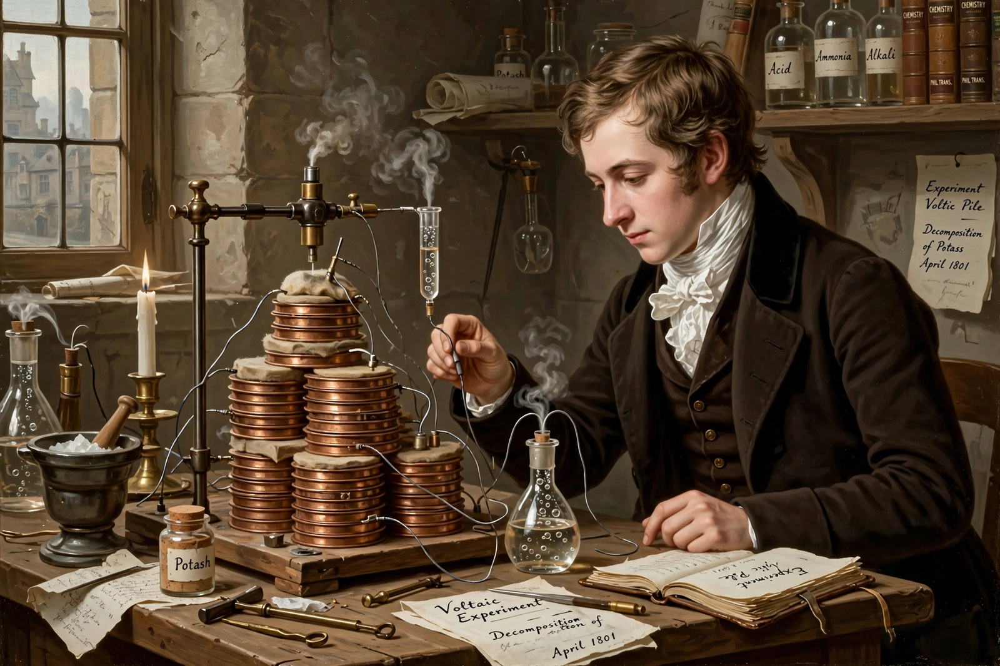

| Sir Humphry Davy | |
|---|---|
 Davy in the laboratory of the Royal Institution | |
| Born | 17 December 1778, Penzance, Cornwall, England |
| Died | 29 May 1829 (aged 50), Geneva, Switzerland |
| Known for | Isolating potassium, sodium, calcium, magnesium, barium, strontium, boron; the Davy lamp; electrochemistry |
| Institutions | Royal Institution; Royal Society |
| Notable student | Michael Faraday |
Sir Humphry Davy, 1st Baronet (17 December 1778 – 29 May 1829) was a Cornish chemist and inventor who became one of the most celebrated scientists of his age. He pioneered electrochemistry, isolating a series of elements for the first time using electric current, and invented the Davy lamp, a safety lamp for miners that saved many lives.
Davy was born in Penzance, the son of a woodcarver, and was apprenticed to an apothecary-surgeon. Largely self-educated in science, he was taken on in 1798 by Thomas Beddoes at the Pneumatic Institution in Bristol, where he investigated the medical uses of gases. Experimenting on himself with nitrous oxide, he noted its euphoric and analgesic effects, coined its popular name "laughing gas", and in 1800 published research suggesting it might be used in surgery — a hint largely ignored until anaesthesia arrived decades later.
In 1801 Davy joined the newly founded Royal Institution in London, where his public lectures became a fashionable sensation, drawing large audiences including many women — then unusual in science. He became professor of chemistry there in 1802 and a Fellow of the Royal Society in 1803.
Using the Institution's giant voltaic battery — then the most powerful in the world — Davy in 1807 passed a current through molten potash and isolated potassium, the first metal separated by electrolysis, followed within days by sodium. In 1808 he isolated calcium, strontium, barium and magnesium, and obtained boron in impure form. He also demonstrated that diamonds are pure carbon, showed that chlorine is an element (naming it in 1810), and argued that acidity depends on hydrogen rather than oxygen.
After a series of catastrophic explosions in coal mines, Davy was asked in 1815 to devise a safe lamp. His solution enclosed the flame in fine wire gauze: the mesh conducts heat away so that the explosive firedamp outside cannot reach ignition temperature, while the flame's colour also warns miners of gas. The lamp was in use by early 1816 and sharply reduced — though it did not eliminate — mining disasters. Davy refused to patent it.
Knighted in 1812 and later made a baronet, Davy employed the young Michael Faraday as his assistant — a relationship that produced both Faraday's career and Davy's bitter jealousy of it. He served as President of the Royal Society from 1820 to 1827. His health, undermined by years of inhaling experimental gases, declined after a stroke in 1827; he died in Geneva in 1829, aged 50.